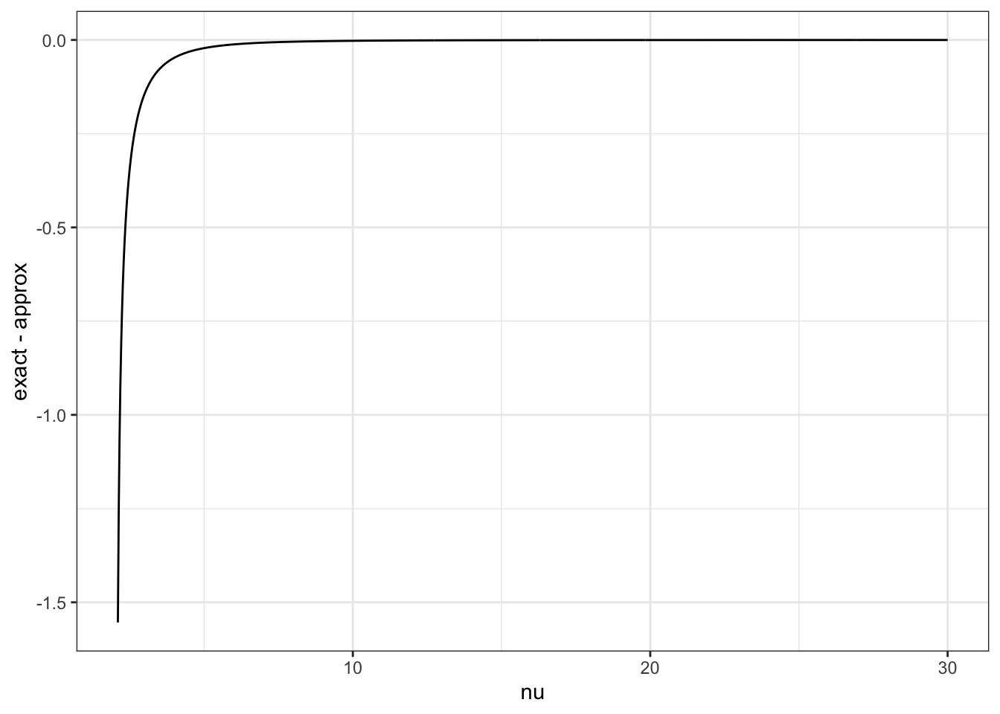

Priors part 4: Specifying priors that appropriately penalise complexity
Let us not lie. Specifying priors are hard. This post steps through a technique for setting priors that I think gives a good basis for realistically complex problems.
Prior distributions
fundamentals
PC priors
Author
Dan Simpson
Published
September 3, 2022
At some point in the distant past, I wrote three posts about prior distributions. The first was very basic, because why not. The second one talked about conjugate priors. The third one talked about so-called objective priors.
I am suddenly1 of a mood to write some more on this2 topic.
The thing is, so far I’ve only really talked about methods for setting prior distributions that I don’t particularly care for. Fuck that. Let’s talk about things I like. There is enough negative energy3 in the world.
So let’s talk about priors. But the good stuff. The aim is to give my answer to the question “how should you set a prior distribution?”.
Bro do you even know what a parameter is?
You don’t. No one does. They’re not real.
Parameters are polite fictions that we use to get through the day. They’re out weapons of mass destruction. They’re the magazines we only bought for the articles. They are our girlfriends who live in Canada4.
One way we can see this is to ask ourselves a simple5: \[
y_i \sim \text{Negative-Binomial}(\mu, \alpha), \qquad i = 1,\ldots, n\text{?}
\]
But let me ask a different question. How many parameters are there in this model8\[\begin{align*}
y_i\mid u_i &\sim \text{Poisson}(\mu u_i) \\
u_i &\sim \text{Gamma}(\alpha^{-1}, \alpha^{-1}),\qquad i=1,\ldots, n\text{?}
\end{align*}\]
One answer to this question would be \(n+2\). In this interpretation of the question everything in the model that isn’t directly observed is a parameter.
But there is another view.
Mathematically, these two models are equivalent. That is, if you marginalise9 out the \(u_i\) you get \[\begin{align*}
\Pr(y=k) &=\frac{\mu^k\alpha^{-1/\alpha}}{\Gamma(\alpha^{-1})\Gamma(k+1)} \int_0^\infty u^k e^{-\mu u} u^{1/\alpha-1}e^{-u/\alpha}\,du \\
&= \frac{\mu^k\alpha^{-1/\alpha}}{\Gamma(\alpha^{-1})\Gamma(k+1)}\int_0^\infty u^{k + 1/\alpha-1}e^{-(\mu + \alpha^{-1})u}\,du \\
&= \frac{\mu^k\alpha^{-1/\alpha}}{\Gamma(\alpha^{-1})\Gamma(k+1)}\int_0^\infty \left(\frac{t}{\mu+\alpha^{-1}}\right)^{k + 1/\alpha-1}e^{-t}\frac{1}{\mu + \alpha^{-1}}\,dt \\
&=\frac{\Gamma(k + \alpha^{-1})}{\Gamma(\alpha^{-1})\Gamma(k+1)} \left(\frac{\mu}{\mu + \alpha^{-1}}\right)^k \left(\frac{\alpha^{-1}}{\mu + \alpha^{-1}}\right)^{1/\alpha} .
\end{align*}\] This is exactly the negative binomial distribution with mean \(\mu\) and variance \(\mu(1 + \alpha \mu)\).
So maybe there are two parameters.
Does it make a difference? Sometimes. For instance, if you were following ordinary practice in Bayesian machine learning, you would (approximately) marginalise out \((\mu, \lambda)\) in the first model, but in the second model you’d probably treat them as tuning hyper-parameters10 in the second and optimise11 over them.
Moreover, in the second model we can ask what other priors could we put on the\(u_i\)?. There is no equivalent question for the first model. This could be useful, for instance, if we believe that the overdispersion may differ among population groups. It is considerably easier to extend the random effects formulation into a multilevel model.
Ok. So it doesn’t really matter too much. It really depends on what you’re going to do with the model when you’re breaking your model into things that we need to set priors for and things where the priors are a structural part of the model.
A hello boys into a party date: on flexibility
There are a lot of ways to set prior distributions. I’ve covered some in previous posts and there are certainly more. But today I’m going to focus on one constructive method that I’m particular fond of: penalised complexity priors.
These priors fall out from a certain way of seeing parameters. The idea is that some parameters in a model function as flexibility parameters. These naturally have a base value, which corresponds to the simplest model that they index. I’ll refer to the distribution you get when the parameter takes its base value as the base model.
Example 1 (Overdispersion of a negative binomial) The negative binomial distribution has two parameters: a mean \(\mu\) and an overdispersion parameter \(\alpha\) so the variance is \(\mu(1 + \alpha \mu)\). The mean parameter is not a flexibility parameter. Conceptually, changing the mean12 does not make a distribution more or less complex, it simply shuttles it around.
On the other hand, the overdispersion parameter \(\alpha\)is a flexibility parameter. It’s special value is \(\alpha =0\), which corresponds to a Poisson distribution, which is the base model for the negative binomial distribution.
Example 2 (Student-t degrees of freedom) The three parameter student-t distribution has density (parameterised by its standard deviation assuming \(\nu > 2\)!) \[
p(y \mid \mu, \sigma, \nu) = \frac{\Gamma\left(\frac{\nu + 1}{2}\right)}{\sigma\nu \sqrt{\frac{\pi}{\nu-2}} \Gamma\left(\frac{\nu}{2}\right)}\left(1 + \frac{\frac{\nu-2}{\nu}\left(\frac{y - \mu}{\sigma}\right)^2}{\nu}\right)^{-\frac{\nu+1}{2}}, \qquad \nu > 2.
\] This has mean \(\mu\) and variance \(\sigma^2\). The slightly strange parameterisation and the restriction to \(\nu>0\) is useful because it lets us specify a prior on the variance itself and not some parameter that is the variance divided by some function13 of \(\nu\).
The natural base model here is \(N(\mu, \sigma^2)\), which corresponds to \(\nu = \infty\).
Example 3 (Variance of a Gaussian random effect) A Gaussian distribution has two parameters: a mean \(\mu\) and a standard deviation \(\tau\). Once again, \(\mu\) is not a flexibility parameter, but in some circumstances \(\tau\) can be.
To see this, imagine that we have a simple random intercept model \[\begin{align*}
y_{ij} \mid u_j &\sim N(u_j, \sigma^2),\qquad i=1,\ldots,n, j =1,\ldots,J \\
u_j &\sim N(\mu, \tau).
\end{align*}\] In this case, we don’t really view \(\sigma\) as a flexibility parameter, but \(\tau\) is. Why the distinction? Well let’s think about what happens at special value \(0\).
When \(\sigma = 0\) we are saying that there is no variability in the data if we know the corresponding \(u_i\). This is, frankly, quite weird and it’s not necessarily a base model we would believe14 in.
On the other hand, if \(\tau =0\), then we are say that all of the groups have the same mean. This is a useful and interesting base model that could absolutely happen in most data. So we say that while \(\sigma\) isn’t necessarily a flexibility parameter in the model, \(\tau\) definitely is.
In this case the base model is the degenerate distribution15 where the mean of each group is equal to \(\mu\).
The second example shows that the idea of a flexibility parameter is deeply contextual. Once again, we run into the idea that Statistical Arianism16 is bad. Parameters and their prior distributions can only be fully understood if you know their context within the entire model.
Sure you’re flexible, but let’s not over-do the Dutch wink
Now that we have the concept of a flexibility parameter, let’s think about how we should use it. In particular, we should ask exactly what we want our prior to do. In the paper we listed 8 things that we want the prior to do:
If we move our model to a new application, it should be clear how we can change the information contained in our prior. We can do this by explicitly including specific information in the prior.
The prior should limit20 the flexibility of an overparameterised model
Restrictions of the prior to identifiable sub-manifolds21 of the parameter space should be sensible.
The prior should be specified to control what a parameter does in the context22 of the model (rather than its numerical value)
These desiderata are aspirational and I in no way claim that we successfully satisfied them. But we tried. And we came up with a pretty useful proposal.
The idea is simple: if our model has a flexibility parameter we should put a prior on it that penalises the complexity of the model. That is, we want most of the prior mass to be near25 the base value.
In practice, we try to do this by penalising the complexity of each component of a model. For instance, consider the following model for a flexible regression: \[\begin{align*}
y_i \mid f, u_i &\sim N(u_i +f(z_i), \sigma^2) \\
f &\sim \text{Smoothing-spline}(\lambda)\\
u_i &\sim N( \mu + x_i^T\beta , \tau^2).
\end{align*}\] The exact definition26 of a smoothing spline that we are using is not wildly important, but it is specified27 by a smoothing parameter \(\lambda\), and when \(\lambda=\infty\) we get our base model (a function that is equal to zero everywhere). This model has two components (\(f\) and \(u\)) and they each have one smoothing parameter (\(\lambda\), with base model at \(\lambda = \infty\), and \(\tau\), with base model at \(\tau = 0\)).
The nice thing about splitting a model up into components and building priors for each component is that we can build generic priors for each component that can be potentially be tuned to make them appropriate for the global model. Is this a perfect way to realise our second aim? No. But it’s an ok place to start28.
The speed of a battered sav: proximity to the base model
Ok. So you’re Brad Pitt. Wait. No.
Ok. So we need to build a prior that penalises complexity by putting most of its prior mass near the base model. In order to do this we need to first specify what we mean by near.
There are a lot of things that we could mean. The easiest choice would be to just use the natural distance from the base model in the parameter space. But this isn’t necessarily a good idea. Firstly, it falls flat when the base model is at infinity. But more importantly, it violates our 6th aim by ignoring the context of the parameter and just setting a prior on its numerical value.
So instead we are going to parameterise distance by asking ourselves a simple question: for a component with flexibility parameter \(\xi\), how much more complex would our model component be if we used the value \(\xi\) instead of the base value \(\xi_\text{base}\)?
We can measure this complexity using the Kullback-Leibler divergence (or KL divergence if you’re nasty) \[
\operatorname{KL}(f || g) = \int_\Theta f(t) \log\left(\frac{f(t)}{g(t)}\right)\,dt.
\] This is a quantity from information theory that directly measures how much information would be lost29 if we replaced the more complex model \(f\) with the simpler model \(g\). The more information that would be lost, the more complex \(f\) is relative to \(g\).
While the Kullback-Leibler divergence looks a bit intimidating the first time you see it, it’s got a lot of nice properties:
It’s always non-negative.
It doesn’t depend on how you parameterise the distribution. If you do a smooth, invertible change of variables to both distribution the KL divergence remains unchanged.
It’s related to the information matrix and the Fisher distance. In particular, let \(f(\theta \mid \xi)\) be a family of distributions parameterised by \(\xi\). Then, near \(\xi_0\), \[
\operatorname{KL}(f(\cdot \mid \xi_0 +\delta) || f(\cdot \mid \xi_0)) = \frac{\delta^2}{2} I(\xi_0) + o(\delta^2),
\] where \(I(\xi) = \mathbb{E}(\log p(f(y \mid \xi))^2)\) is the Fisher information. The quantity on the right hand side is the square of a distance from the base model.
It can be related to the total variation distance30\[
\|f - g\|_\text{TV} \leq \sqrt{\frac{1}{2} \operatorname{KL}(f || g)}.
\]
But it also has some less charming properties:
The KL divergence is not a distance!
The KL divergence is not symmetric, that is \(\operatorname{KL}(f || g) \neq \operatorname{KL}(g || f)\)
The first of these properties is irrelevant to us. The second interesting. I’d argue that it is an advantage. We can think in an analogy: if your base model is a point at the bottom of a valley, there is a big practical difference between how much effort it takes to get from the base model to another model that is on top of a hill compared to the amount of effort it takes to go in the other direction. This type of asymmetry is relevant to us: it’s easier for data to tell a simple model that it should be more complex than it is to tell a complex model to be simpler. We want our prior information to somewhat even this out, so we put less prior mass on models that are more complex and more on models that are more complex.
There is one more little annoyance: if you look at the two distance measures that the KL divergence is related to, you’ll notice that in both cases, the KL divergence is related to the square of the distance and not the distance itself.
If we use the KL divergence itself as a distance proxy, it will increase too sharply31 and we may end up over-penalising. To that end, we use the following “distance” measure \[
d(\xi) = \sqrt{2 \operatorname{KL}(f(\cdot \mid \xi) || f(\cdot \mid \xi_0))}.
\] If you’re wondering about that 2, it doesn’t really matter but it makes a couple of things ever so slightly cleaner down the road.
Ok. Let’s compute some of these distances!
Example 4 (Overdispersion of a negative binomial (continued)) The negative binomial distribution is discrete so \[\begin{multline}
\frac{1}{2}d^2(\alpha) = \sum_{k=1}^\infty \frac{\Gamma(k + \alpha^{-1})}{\Gamma(\alpha^{-1})\Gamma(k+1)} \left(\frac{\mu}{\mu + \alpha^{-1}}\right)^k \left(\frac{\alpha^{-1}}{\mu + \alpha^{-1}}\right)^{1/\alpha} \\
\times \left[\log \Gamma(k +\alpha^{-1}) - \log \Gamma(\alpha^{-1}) - k \log(\mu + \alpha^{-1}) + \alpha^{-1}\log \alpha^{-1} - \alpha^{-1}\log(\mu + \alpha^{-1}) + \mu \right].
\end{multline}\] This has two problems: I can’t work out what it is and it might32 end up depending on \(\mu\).
Thankfully we can use our alternative representation of the negative binomial to note that \(u_i \sim \text{Gamma}(\alpha^{-1}, \alpha^{-1})\) and so we could just as well consider \(u_i\) the model component that we want to penalise the complexity of. In this case we need the KL divergence33between Gamma distributions\[\begin{multline}
\operatorname{KL}(\text{Gamma}(a^{-1},a^{-1}) || \text{Gamma}(b^{-1},b^{-1})) = (a^{-1}-b^{-1}) \psi(a^{-1}) - \log\Gamma(a^{-1}) + \log\Gamma(b^{-1}) \\
+ b^{-1}(\log a^{-1} - \log b^{-1}) + b^{-1}-a^{-1},
\end{multline}\] where \(\psi(a)\) is the digamma function.
Now, you will notice that as \(b\rightarrow 0\) the KL divergence heads off to infinity. This happens a lot when the base model is much simpler than the flexible model. Thankfully, we will see later that we can ignore the factor of \(b^{-1}\) and get a PC prior that’s valid against the base model \(\text{Gamma}(b^{-1}, b^{-1})\) for all sufficiently small \(b>0\). This is not legally the same thing as having one for \(b=0\), but it is morally the same.
With this, we get \[
d(\alpha) = \sqrt{2\log(\alpha^{-1}) - 2\psi(\alpha^{-1}) }.
\]
If the digamma function is a bit too hardcore for you, the approximation\[
\psi(\alpha^{-1}) = \log(\alpha^{-1}) - \frac{\alpha}{2} + \mathcal{O}(\alpha^2)
\] gives the approximate distance \[
d(\alpha) \approx \sqrt{\alpha}.
\] That is, the distance we are using is approximately the standard deviation of \(u_i\).
Example 5 (Student-t degrees of freedom (Continued)) In our original paper, we computed the distance for the degrees of freedom numerically. However, Yongqiang Tang derived an analytic expression for it. \[
d(\nu) = \sqrt{1 + \log \left(\frac{2}{\nu-2}\right) + 2 \log\left(\frac{\Gamma((\nu+1)/2)}{\Gamma(\nu/2)}\right) - (\nu + 1)(\psi((\nu+1)/2) - \psi(\nu/2))}.
\]
If we note that \[
\log(\Gamma(z)) = \left(z- \frac{1}{2}\right)\log z - z + \frac{1}{2}\log(2\pi) + \frac{1}{12z} + \mathcal{O}(z^{-1}),
\] we can use this (and the above asymptotic expansion of the digamma function) to get We can use the same asymptotic approximations as above to get \[\begin{align*}
d(\nu)^2 \approx& {} 1 + \log \left(\frac{2}{\nu-2}\right) \\
&\quad {} + 2\left(\frac{\nu}{2}\log \frac{\nu+1}{2} - \frac{\nu+1}{2} + \frac{1}{2}\log(2\pi) + \frac{1}{6(\nu+1)}\right) \\
&\quad -2\left(\frac{\nu-1}{2}\log \frac{\nu}{2} - \frac{\nu}{2} + \frac{1}{2}\log(2\pi) + \frac{1}{6\nu}\right) \\
&\quad {} - (\nu + 1)(\log((\nu+1)/2) - \frac{1}{\nu+1}- \log(\nu/2) + \frac{1}{\nu}) \\
=& \log \left(\frac{\nu^2}{(\nu+1)(\nu-2)}\right) - \frac{\nu +2}{3\nu(\nu+1)}.
\end{align*}\]
Once again, this is not a terrible approximation, but it’s also not an excellent one.
Example 6 (Variance of a Gaussian random effect (Continued)) The distance calculation for the standard deviation of a Gaussian random effect has a very similar structure to the negative binomial case. We note, via wikipedia, that \[\begin{align*}
\operatorname{KL}(N(\mu, \tau^2) || N(\mu, \epsilon^2)) &= \log \frac{\tau}{\epsilon} + \frac{\tau^2}{\epsilon^2} - \frac{1}{2} \\
&= \frac{\tau^2}{\epsilon^2}\left(1 + \frac{\epsilon^2}{\tau^2}\log \frac{\tau}{\epsilon}- \frac{\epsilon^2}{2\tau^2}\right).
\end{align*}\]
This implies that \[
d(\tau) = \epsilon^{-1}\tau + o(\epsilon^{-1}).
\] We shall see later that the scaling on the \(\tau\) doesn’t matter so for all intents and purposed \[
d(\tau) = \tau.
\]
Spinning off the flute into a flat bag: Turning a distance into a prior
So now that we have a distance measure, we need to turn it into a prior. There are lots of ways we can do this. Essentially any prior we put on the distance \(d(\xi)\) can be transformed into a prior on the flexibility parameter \(\xi\). We do this through the change of variables formula \[
p_\xi(\xi) = p_d(d(\xi))\left|\frac{d}{d\xi} d(\xi)\right|,
\] where \(p_d(\cdot)\) is the prior density for the distance parameterisation
But which prior should we use on the distance? A good default choice is a prior that penalises at a constant rate. That is, we want \[
\frac{p_d(d + \delta)}{p_d(d)} = r^{\delta}
\] for some \(0<r<1\). This condition says that the rate at which the density decreases does not change as we move through the parameter space. This is extremely useful because any other (monotone) distribution is going to have a point at which the bulk changes to the tail. As we are putting our prior on \(d\), we won’t necessarily be able to reason about this point.
Constant-rate penalisation implies that the prior on the distance scale is an exponential distribution and, hence, we get our generic PC prior for a flexibility parameter \(\xi\)\[
p(\xi) = \lambda e^{-\lambda d(\xi)}\left|\frac{d}{d\xi} d(\xi)\right|.
\]
Example 7 (Overdispersion of a negative binomial (continued)) The exact PC prior for the overdispersion parameter in the negative binomial distribution is \[
p(\alpha) = \frac{\lambda}{\alpha^{2}}\frac{\left|\psi'\left(\alpha^{-1}\right)-\alpha\right|}{ \sqrt{2 \log (\alpha^{-1}) - 2 \psi(\alpha^{-1})}} \exp \left[ -\lambda \sqrt{2 \log (\alpha^{-1}) - 2 \psi(\alpha^{-1})}\right],
\] where \(\psi'(\cdot)\) is the derivative of the digamma function.
On the other hand, if we use the approximate distance we get \[
p_\text{approx}(\alpha) = \frac{\lambda}{2\sqrt{\alpha}} e^{-\lambda \sqrt{\alpha}}.
\]
dat |>ggplot(aes(x = alpha, y = exact - approx)) +geom_line(colour ="black") +theme_bw()
That’s a pretty good agreement!
Example 8 (Student-t degrees of freedom (Continued)) An interesting feature of the PC prior (and any prior where the density on the distance scale takes its maximum at the base model) is that the implied prior on \(\nu\) has no finite moments. In fact, if your prior on \(\nu\) has finite moments, the density on the distance scale is zero at zero!
The exact PC prior for the degrees of freedom in a Student-t distribution is \[
p(\nu) = \lambda \frac{\frac{1}{\nu-2} + \frac{\nu+1}{2}\left[\psi'\left(\frac{\nu+1}{2}\right)-\psi'\left(\frac{\nu}{2}\right)\right]}{4d(\nu)}e^{-\lambda d(\nu)},
\] where \(d(\nu)\) is given above.
The approximate PC prior is \[
p_\text{approx}(\nu) = \lambda\frac{\nu(\nu+2)(2\nu+9) + 4}{3\nu^2(\nu+1)^2(\nu-2)} \left(\frac{\nu^2}{(\nu+1)(\nu-2)}\right)^\lambda e^{ - \lambda\frac{\nu +2}{3\nu(\nu+1)}}.
\] Let’s look at the difference.
dat |>ggplot(aes(x = nu, y = exact - approx)) +geom_line(colour ="black") +theme_bw()

The approximate prior isn’t so good for \(\nu\) near 2. In the original paper, the distance was tabulated for \(\nu < 9\) and a different high-precision asymptotic expansion was given for \(\nu>9\).
In the original paper, we also plotted some common priors for the degrees of freedom on the distance scale to show just how informative flat-ish priors on \(\nu\) can be! Note that the wider the uniform prior on \(\nu\) is the more informative it is on the distance scale.
(Left) Exponential priors on \(\nu\) shown on the distance scale, from right to left the mean of the prior increases (5, 10, 20). (Right) \(\text{Uniform}[2, M]\) priors on \(\nu\) shown on the distance scale. From left to right \(M\) increases (20, 50, 100).
Example 9 (Variance of a Gaussian random effect (Continued)) This is the easy one because the distance is equal to the standard deviation! The PC prior for the standard deviation of a Gaussian distribution is an exponential prior \[
p(\sigma) = \lambda e^{-\lambda \sigma}.
\] More generally, if \(u \sim N(0, \sigma^2 R)\) is a multivariate normal distribution, than the PC prior for \(\sigma\) is still \[
p(\sigma) = \lambda e^{-\lambda \sigma}.
\] The corresponding prior on \(\sigma^2\) is \[
p(\sigma^2) = \frac{\lambda}{2\sqrt{\sigma^2}}e^{-\lambda\sqrt{\sigma^2}}.
\] Sometimes, for instance if you’re converting a model from BUGS or you’re looking at the smoothing parameter of a smoothing spline, you might specify your normal distribution in terms of the precision, which is the inverse of the variance. If \(u \sim N(0, \gamma^{-1}Q^{-1})\), then the corresponding PC prior (using the change of variables \(\gamma = \sigma^{-2}\)) is \[
p(\gamma) = \frac{\lambda}{2}\gamma^{-3/2} e^{-\lambda \gamma^{-1/2}}.
\]
This case was explored extensively in the context of structured additive regression models (think GAMs but moreso) by Klein and Kneib, who found that the choice of exponential prior on the distance scale gave more consistent performance than either a half-normal or a half-Cauchy distribution.
Closing the door: How to choose \(\lambda\)
The big unanswered question is how do we choose \(\lambda\). The scaling of a prior distribution is vital to its success, so this is an important question.
And I will just say this: work it out your damn self.
The thing about prior distributions that shamelessly include information is that, at some point, you need to include36 some information. And there is no way for anyone other than the data analyst to know what the information to include is.
But I can outline a general procedure.
Imagine that for your flexibility parameter \(\xi\) you have some interpretable transformation of it \(Q(\xi)\). For instance if \(\xi = \sigma^2\), then a good choice for \(Q(\cdot)\) would be \(Q(\sigma^2)=\sigma\). This is because standard deviations are on the same scale as the observations37, and we have intuition about that happens one standard deviation from the mean.
We then use problem-specific information can help us set a natural scale for \(Q(\xi)\). We do this by choosing \(\lambda\) so that \[
\Pr(Q(\xi) > U) = \alpha
\] for some \(U\), which we would consider large38 for our problem, and \(0<\alpha<1\).
From the properties of the exponential distribution, we can see that we can satisfy this if we choose \[
\lambda = - \frac{\log(\alpha)}{d^{-1}(Q^{-1}(U))}.
\] This can be found numerically if it needs to be.
The simplest case is the standard deviation of the normal distribution, because in this case \(Q(\sigma) = \sigma\) and \(d^{-1}(Q^{-1}(U)) = U\). In general, if \(u \sim N(0, \sigma R)\) and \(R\) is not a correlation matrix, you should take into account the diagonal of \(R\) when choosing \(Q\). For instance, choosing \(Q\) to be the geometric mean39 of the marginal variances of the \(u_i\) is a good idea!
When a model has more than one component, or a component has more than one flexibility parameter, it can be the case that \(Q(\cdot)\) depends on multiple parameters. For instance, if I hadn’t reparameterised the Student-t distribution to have variance independent of \(\nu\), a PC prior on \(\sigma\) would have a quantity of interest that depends on \(\nu\). We will also see this if I ever get around to writing about priors for Gaussian processes.
The Dream: PC priors in practice
Thus we can put together a PC prior as the unique prior that follows the following four principles:
Occam’s razor: We have a base model that represents simplicity and we prefer our base model.
Measuring complexity: We define the prior using the square root of the KL divergence between the base model and the more flexible model. The square root ensures that the divergence is on a similar scale to a distance, but we maintain the asymmetry of the divergence as as a feature (not a bug).
Constant penalisation: We use an exponential prior on the distance scale to ensure that our prior mass decreases evenly as we move father away from the base model.
User-defined scaling: We need the user to specify a quantity of interest \(Q(\xi)\) and a scale \(U\). We choose the scaling of the prior so that \(\Pr(Q(\xi) > U) = \alpha\). This ensures that when we move to a new context, we are able to modify the prior by using the relevant information about \(Q(\xi)\).
These four principles define a PC prior. I think the value of laying them out explicitly is that users and critics can clearly and cleanly identify if these principles are relevant to their problem and, if they are, they can implement them. Furthermore, if you need to modify the principles (say by choosing a different distance measure), there is a clear way to do that.
I’ve come to the end of my energy for this blog post, so I’m going to try to wrap it up. I will write more on the topic later, but for now there are a couple of things I want to say.
These priors can seem quite complex, but I assure you that are a) useful, b) used, and c) not too terrible in practice. Why? Well fundamentally because you usually don’t have to derive them yourselves. Moreover, a lot of that complexity is the price we pay for dealing with densities. We think that this is worth it and the lesson that the parameterisation that you are given may not be the correct parameterisation to use when specifying your prior is an important one!
The original paper contains a bunch of other examples. The paper was discussed and we wrote a rejoinder40, which contains an out-of-date list of other PC priors people have derived. If you are interested in some other people’s views of this idea, a good place to start is the discussion of the original paper.
PC priors are all over the INLA software package and its documentation contains a bunch more examples.
Try them out. They’ll make you happy.
Footnotes
I’ve not turned on my computer for six weeks and tbh I finished 3 games and I’m caught up on TV and the weather is shite.↩︎
“But what about sparse matrices?!” exactly 3 people ask. I’ll get back to them. But this is what I’m feeling today.↩︎
I am told my Mercury is in Libra and truly I am not living that with those posts. Maybe Mercury was in Gatorade when I wrote them. So if we can’t be balanced at least let’s like things.↩︎
Our weapon of ass destruction that lives in Canada?↩︎
Negative binomial parameterised by mean and overdispersion so that its mean is \(\mu\) and the variance is \(\mu(1+\alpha \mu)\) because we are not flipping fucking coins here↩︎
Hello and welcome to Statistics for Stupid Children. My name is Daniel and I will be your host today.↩︎
If we didn’t have stupid children we’d never get dumb adults and then who would fuck me? You? You don’t have that sort of time. You’ve got a mortgage to service and interest rates are going up. You’ve got your Warhammer collection and it is simply not going to paint itself. You’ve been meaning to learn how to cook Thai food. You simply do not have the time. (I’m on SSRIs so it’s never clear what will come first: the inevitable decay and death of you and your children and your children’s children; the interest, eventual disinterest, and inevitable death of the family archivist from the far future who digs up your name from the digital graveyard; the death of the final person who will ever think of you, thereby removing you from the mortal realm entirely; the death of the universe; or me. Fucking me is a real time commitment.)↩︎
Gamma is parameterised by shape and rate, so \(u_i\) has mean 1 and variance \(\alpha\).↩︎
Sometimes, people still refer to these as hyperparameters and put priors on them, which would clarify things, but like everything in statistics there’s no real agreed upon usage. Because why would anyone want that?↩︎
This is critical: we do not know\(\nu\) so the only way we can put a sensible prior on the scaling parameter is if we disentangle the role of these two parameters!↩︎
In fact, if my model estimated the data-level variance to be nearly zero I would assume I’ve fucked something up elsewhere and my model is either over-fitting or I have a redundancy in my model (like if \(J = n\)).↩︎
There are some mathematical peculiarities that we will run into later when the base model is singular. But they’re not too bad.↩︎
The Arianist heresy is that God, Jesus, and the Holy Spirit are three separate beings rather than consubstantial. It’s the reason for that bit of the Nicene. The statistical version most commonly occurs when you consider you model for your data conditional on the parameters (you likelihood) and your model for the parameters (your prior) as separate objects. This can lead to really dumb priors and bad inferences.↩︎
Complaining that a prior is adding information is like someone complaining to you that his boyfriend has stopped fucking him and you subsequently discovering that this is because his boyfriend died a few weeks ago. Like I’m sorry Jonathan, I know even the sight of a traffic cone sets your bussy a-quiverin’, but there really are bigger concerns and I’m gonna need you to focus.↩︎
In this story, the bigger concerns are things like misspecification, incorrect assumptions, data problems etc etc, the traffic cone is an unbiased estimator, Jonathan is our stand in for a generic data analyst, and Jonathan’s bussy is said data scientist’s bussy.↩︎
Yes, I know that there are problems with giving my generic data analyst a male name. Did I carefully think through the gender and power dynamics in my bussy simile? I think the answer to that is obvious.↩︎
We use priors for the same reason that other people use penalties: we don’t want to go into a weird corner of our model space unless our data explicitly drags us there↩︎
This is a bit technical. When a model is over-parameterised, it’s not always possible to recover all of the parameters. So we ideally want to make sure that if there are bunch of asymptotically equivalent parameters, our prior operates sensibly on that set. An example of this will come in a future post where I’ll talk about priors for the parameters of a Gaussian process.↩︎
There are examples of theoretically motivated priors where it’s wildly expensive to compute their densities. We will see one in a later post about GPs.↩︎
Sure, Jan. Of course we want that. But we believed that it was important to include this in a list of desiderata because we never want to say “our prior has motivation X and therefore it is good”. It is not enough to be pure, you actually have to work.↩︎
Think of it as a P-spline if you must. The the important thing is that the weights of the basis functions are jointly normal with mean zero and precision matrix \(\lambda Q\).↩︎
The “easy” way to get this is to use the fact that the Gamma is in the exponential family and use the general formula for KL divergences in exponential families. The easier way is to look it up on Wikipedia↩︎
I’ll be dead before I declare that something is an approximation without bloody checking how good it is.↩︎
We have already included information that \(\xi\) is a flexibility parameter with base model \(\xi_\text{base}\), but that is model-specific information. Now we move on to problem specific information.↩︎